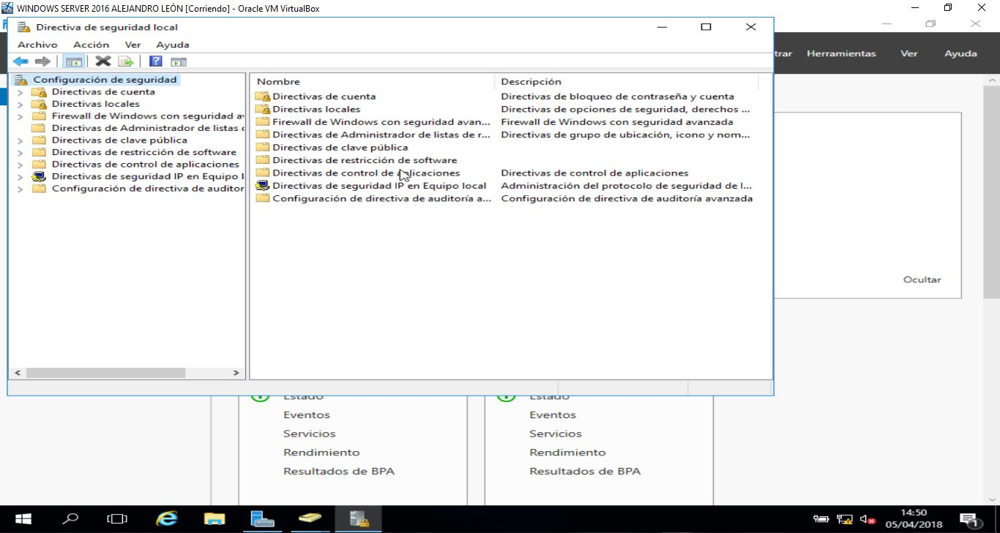

Apartado C
ADMINSTRAR EL ACCESO A RECURSOS LOCALES Y RECURSOS DE RED:
ADMINSTRAR EL ACCESO A RECURSOS LOCALES Y RECURSOS DE RED:
Realmente para administrar el acceso a los usuarios hay varias formas pero la que nosotros usaremos será por las "DIRECTIVA DE SEGURIDAD LOCAL".
Para poder acceder a ellas iniciaremos sesión en el servidor, y nos dirigiremos a el panel administrador del servidor, dentro de allí nos dirigiremos a "HERRAMIENTAS" y dentro de herramientas en "DIRECTIVA DE SEGURIDAD LOCAL", dentro de ahí nos dirigiremos a "DIRECTIVAS LOCALES" y dentro de directivas locales, nos dirigiremos a "ASIGNACIÓN DE DERECHOS DE USUARIO" y ahí podremos restringir y administrar el acceso a los recursos locales y de red.
